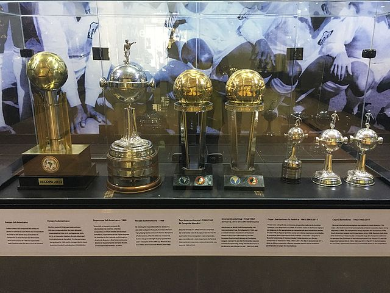

Titulos conquistados pelo Santos Fc
São 45 Titulos Oficiais
- 8 Vezes Campeão Brasileiro : 1961, 1962, 1963, 1964, 1965, 1968, 2002, 2004.
- 3 Vezes Campeão da Libertadores : 1962, 1963, 2011.
- 2 Vezes Campeão Mundial : 1962, 1963.
- 1 Vez Campeão da Copa do brasil : 2010.
- 1 Vez Campeão da Copa Conmebol : 1998.
- 1 Vez Campeão da Supercopa sul americana dos campeões mundiais : 1968.
- 1 Vez Campeao da Recopa Mundial : 1968.
- 1 Vez Campeão da Recopa sul americana : 2012.
- 5 Vezes Campeão do Torneio rio são paulo : 1959, 1963, 1964, 1966, 1997.
- 22 Vezes Campeão Paulista : 1935, 1955, 1956, 1958, 1960, 1961, 1962, 1964, 1965, 1967, 1968, 1969, 1973, 1978, 1984, 2006, 2007, 2010, 2011, 2012, 2015, 2016.
Click Aqui para voltar para a Pagina Principal.